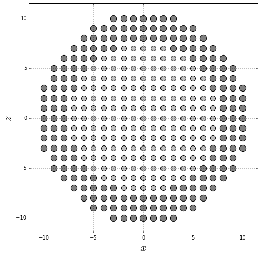

Building a core/shell nanoparticle
Let’s build a core/shell nanoparticle with a simple cubic structure using a python script.
Import the required libraries
- numpy handles numeric arrays and mathematical operations.
- product returns cartesian product of input iterables.
- matplotlib produces figures.
- defaultdict is a dictionary where each value has a defined type.
import numpy
from itertools import product
from matplotlib import pyplot
from collections import defaultdict
Define the values of the core (Rc) and nanoparticle (R) radius measured in magnetic unit cells (muc). Each site is a magnetic moment.
Rc = 7.5
R = 10.5
Define the core (sc) and shell (ss) spin values, the core (kc) and shell (ks) anisotropy constants, the core-core (jcc), core-shell (jint) and shell-shell (jss) exchange interaction constants, and the spin update policy for the direction of the magnetic moments. Because the atomic magnetic moment is taken as , it should be considered in the units of the magnetic field in a simulation. jcc = 1.0 is taken as the unit of energy (see Dimitriadis et al.).
ss = sc = 1.0
jcc = 1.0
kc = 0.1 * jcc
ks = 0.5 * jcc
jint = -0.5 * jcc
jss = -0.5 * jcc
update_policy = "adaptive"
Create a dictionary to easily retrieve the parameters defined above.
spin = {
"core": sc,
"core_interface": sc,
"shell": ss,
"shell_interface": ss,
}
kan = {
"core": kc,
"core_interface": kc,
"shell": ks,
"shell_interface": ks,
}
jex = {
("core", "core"): jcc,
("core", "shell"): jint,
("shell", "core"): jint,
("shell", "shell"): jss
}
Create a list of sites and assign them as core or shell ions according to Rc.
sites = list()
core_sites = list()
shell_sites = list()
for site in product(range(-int(numpy.ceil(R+1)), int(numpy.ceil(R+1))),
range(-int(numpy.ceil(R+1)), int(numpy.ceil(R+1))),
range(-int(numpy.ceil(R+1)), int(numpy.ceil(R+1)))):
dist = numpy.linalg.norm(site)
if dist <= R:
sites.append(site)
if dist <= Rc:
core_sites.append(site)
else:
shell_sites.append(site)
Convert the previous list to numpy arrays in order to produce a midplane cross-section for .
all_positions = numpy.array(sites)
core_positions = numpy.array(core_sites)
shell_positions = numpy.array(shell_sites)
core_positions = core_positions[core_positions[:, 1] == 0]
shell_positions = shell_positions[shell_positions[:, 1] == 0]
Generate a graphic of the midplane cross-section using different colors for the core and the shell ions.
pyplot.figure(figsize=(8, 8))
pyplot.scatter(core_positions[:, 0], core_positions[:, 2], s=100, color="silver", edgecolor="black")
pyplot.scatter(shell_positions[:, 0], shell_positions[:, 2], s=150, color="gray", edgecolor="black")
pyplot.grid()
pyplot.xlabel(r"$x$", fontsize=20)
pyplot.ylabel(r"$z$", fontsize=20)
pyplot.xlim(-R-1, R+1)
pyplot.ylim(-R-1, R+1)
pyplot.gca().set_aspect("equal")
pyplot.show()

Identify the neighbors of each magnetic moment and store them in a dictionary.
nhbs = defaultdict(list)
for site in sites:
x, y, z = site
for dx, dy, dz in [(1, 0, 0), (-1, 0, 0),
(0, 1, 0), (0, -1, 0),
(0, 0, 1), (0, 0, -1)]:
nhb = ((x + dx), (y + dy), (z + dz))
if nhb in sites:
nhbs[site].append(nhb)
Make some verifications: that each site has a maximum of neighbors, that the neighbors of each site are muc away, and that each site is in the neighbors list of each of its neighbors.
for site in sites:
assert len(nhbs[site]) <= 6
for nhb in nhbs[site]:
assert numpy.linalg.norm(numpy.array(site) - numpy.array(nhb)) == 1.0
assert site in nhbs[nhb]
Create a dictionary to identify the type of each site, which can be core, shell, core_interface and shell_interface, which corresponds to sites located in the core, the shell, the core interface and the shell interface, respectively.
types = dict()
for site in sites:
prefix = "core" if site in core_sites else "shell"
for nhb in nhbs[site]:
nhb_prefix = "core" if nhb in core_sites else "shell"
if prefix != nhb_prefix:
prefix += "_interface"
break
types[site] = prefix
Create a dictionary to store all the sites of each type.
positions = defaultdict(list)
for site in sites:
positions[types[site]].append(site)
Verify that there are only four ion types.
positions.keys()
dict_keys(['core_interface', 'core', 'shell', 'shell_interface'])
Again, convert the sites list to numpy arrays in order to produce a midplane cross-section for .
core = numpy.array(positions["core"])
shell = numpy.array(positions["shell"])
core_interface = numpy.array(positions["core_interface"])
shell_interface = numpy.array(positions["shell_interface"])
core = core[core[:, 1] == 0]
shell = shell[shell[:, 1] == 0]
core_interface = core_interface[core_interface[:, 1] == 0]
shell_interface = shell_interface[shell_interface[:, 1] == 0]
Generate a graphic of the midplane cross-section using different colors for the core, shell, core interface and shell interface ions.
pyplot.figure(figsize=(8, 8))
pyplot.scatter(core[:, 0], core[:, 2], s=100, color="silver", edgecolor="black")
pyplot.scatter(shell[:, 0], shell[:, 2], s=150, color="gray", edgecolor="black")
pyplot.scatter(core_interface[:, 0], core_interface[:, 2], s=100, color="gold", edgecolor="black")
pyplot.scatter(shell_interface[:, 0], shell_interface[:, 2], s=150, color="red", edgecolor="black")
pyplot.grid()
pyplot.xlabel(r"$x$", fontsize=20)
pyplot.ylabel(r"$z$", fontsize=20)
pyplot.xlim(-R-1, R+1)
pyplot.ylim(-R-1, R+1)
pyplot.gca().set_aspect("equal")
pyplot.show()

Define the anisotropy and external magnetic field axes for each site, which in this case is the axis for all the ions.
anisotropy_axis = dict()
field_axis = dict()
for site in sites:
anisotropy_axis[site] = (0.0, 0.0, 1.0)
field_axis[site] = (0.0, 0.0, 1.0)
Count the number of interactions equal to the sum of the neighbors of each site, and the number of sites as the length of the list of the sites.
num_interactions = 0
for site in sites:
num_interactions += len(nhbs[site])
num_sites = len(sites)
Create the files to store the structural properties (sample.dat) and the anisotropy (anisotropy.dat) of the sample.
sample_file = open("sample.dat", mode="w")
anisotropy_file = open("anisotropy.dat", mode="w")
Write in the first line of sample_file the number of sites, interactions and types:
sample_file.write("{} {} {}\n".format(num_sites, num_interactions, len(set(types.values()))))
print(num_sites, num_interactions, len(set(types.values())))
4945 27576 4
Write the ion types on a different line each one.
for t in sorted(set(types.values())):
sample_file.write("{}\n".format(t))
print(t)
core
core_interface
shell
shell_interface
Write the parameters of each site according to the established format.
for site in sites:
i = sites.index(site)
t = types[site]
sample_file.write("{} {} {} {} {} {} {} {} {} {}\n".format(i, *site, spin[t], *field_axis[site], t, update_policy))
anisotropy_file.write("{} {} {} {}\n".format(*anisotropy_axis[site], kan[t]))
Write the exchange interactions between every pair of neighbors.
for site in sites:
t = types[site]
for nhb in nhbs[site]:
nhb_t = types[nhb]
sample_file.write("{} {} {}\n".format(
sites.index(site), sites.index(nhb),
jex[(t.split("_")[0], nhb_t.split("_")[0])]))
Close the files.
sample_file.close()
anisotropy_file.close()
Creating an initial state file
When a magnetic system is simulated in ùïçegas, the initial magnetization state of the system can be a random state or a state inputed by the user.
Let’s look at a case where the user needs to input the initial magnetization state: In simulations of exchange bias in core/shell nanoparticles, it is necessary to cool down the nanoparticle from a temperature between the Néel temperature of the antiferromagnetic shell () and the Curie temperature of the ferromagnetic core (), in presence of an external magnetic field (), to a very low temperature . However, this cooling process can be avoided using an energy minimization procedure. The ferromagnetic core ions are first oriented along the direction, indicating the desired core orientation at positive field saturation. The antiferromagnetic shell is then set with one of two polarities, AFM+ and AFM−, indicating whether alternate atoms in the lattice are up-down-up-down or down-up-down-up. For each of the polarities the total system energy is calculated, and the polarity with the lowest energy is then selected. This process ensured a left shift of the hysteresis loop for all particles, consistent with the setting of a fully saturated exchange-bias system (see Evans et al.).
Let’s implement this energy minimization procedure in the current python script.
Define a function to calculate the energy of the system in presence of an external magnetic field Hmax:
Hmax = 1.0
def energy(state, Hmax):
E_exchange = 0.0
E_other = 0.0
for i, site in enumerate(sites):
t = types[site].split("_")[0]
for nbh in nhbs[site]:
t_nbh = types[nbh].split("_")[0]
E_exchange -= state[i] * state[sites.index(nbh)] * jex[(t, t_nbh)]
E_other -= (Hmax * state[i] + (kan[t] * state[i])**2)
return 0.5 * E_exchange + E_other
Create one of the two possible magnetization states where the orientation of the spin moments in the shell are and in the core are :
state1 = list()
for site in sites:
if types[site].split("_")[0] == "shell":
if sum(site) % 2 == 0:
state1.append(-1.0)
else:
state1.append(1.0)
else:
state1.append(1.0)
state1 = numpy.array(state1)
And create the other possible magnetization state where the orientation of the spin moments in the shell are and in the core are :
state2 = list()
for site in sites:
if types[site].split("_")[0] == "shell":
if sum(site) % 2 == 0:
state2.append(1.0)
else:
state2.append(-1.0)
else:
state2.append(1.0)
state2 = numpy.array(state2)
In order to visualize both magnetization states, create midplane cross-section for :
directions1 = state1[all_positions[:, 1] == 0]
layer1 = all_positions[all_positions[:, 1] == 0]
x1, y1, z1 = layer1.T
directions2 = state2[all_positions[:, 1] == 0]
layer2 = all_positions[all_positions[:, 1] == 0]
x2, y2, z2 = layer1.T
Plot both midplane cross-sections. In both cases the core ions are oriented along the direction, while the the shell ions are alternated in different ways, as expected.
fig = pyplot.figure(figsize=(16, 8))
ax1 = fig.add_subplot(121)
ax2 = fig.add_subplot(122)
ax1.add_artist(pyplot.Circle((0, 0), Rc, color='black', fill=False, lw=2))
ax1.add_artist(pyplot.Circle((0, 0), R, color='black', fill=False, lw=2))
ax1.quiver(x1, z1, 0, directions1, directions1, pivot="middle",
cmap="prism", scale=25, width=0.005, lw=0.5, zorder=10)
ax1.set_title("State 1")
ax2.add_artist(pyplot.Circle((0, 0), Rc, color='black', fill=False, lw=2))
ax2.add_artist(pyplot.Circle((0, 0), R, color='black', fill=False, lw=2))
ax2.quiver(x2, z2, 0, directions2, directions2, pivot="middle",
cmap="prism", scale=25, width=0.005, lw=0.5, zorder=10)
ax2.set_title("State 2")
for ax in [ax1, ax2]:
ax.grid()
ax.set_xlabel(r"$x$", fontsize=20)
ax.set_ylabel(r"$z$", fontsize=20)
ax.set_xlim(-R-1, R+1)
ax.set_ylim(-R-1, R+1)
ax.set_aspect("equal")
pyplot.show()

Call the function energy to compute the energy of the two magnetization states.
print("state1: ", energy(state1, Hmax))
print("state2: ", energy(state2, Hmax))
state1: -11186.41
state2: -11576.41
In this case, the magnetization state state2 minimizes the energy. However, this could change for nanoparticles of different size. Then, it is always recommended to compute and compare both energies.
state = state1 if energy(state1, Hmax) <= energy(state2, Hmax) else state2
Finally, create the file to store the initial state of the nanoparticle (initialstate.dat):
initialstate_file = open("initialstate.dat", mode="w")
for i, site in enumerate(sites):
initialstate_file.write("{} {} {}\n".format(0.0, 0.0, state[i]))
initialstate_file.close()
The result of this script is the creation of three files: sample.dat, anisotropy.dat and initialstate.dat, which store the structural properties, the anisotropy and the initial magnetic state of the core/shell nanoparticle.